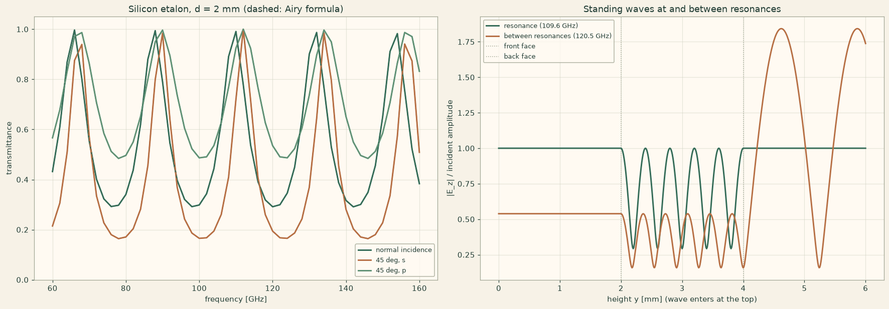
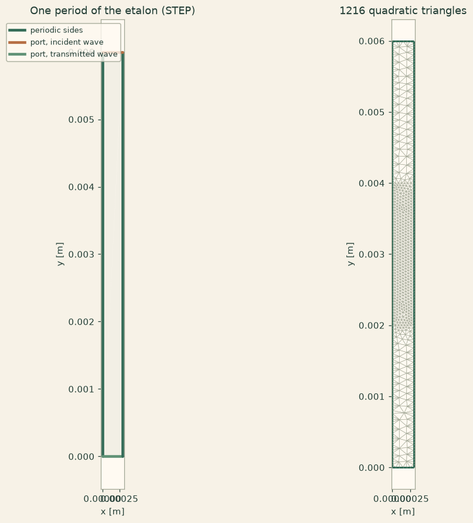

Docs › Examples › Fabry-Perot etalon
Wave optics, interference · 2D
Fabry-Perot etalon
A 2 mm silicon plate in air is swept from 60 to 160 GHz at normal and oblique incidence and transmits fully at its Fabry-Perot resonances.

What it computes
OneSimulation cuts one period of the plate from STEP files and solves the out-of-plane field with quadratic triangles for every frequency, with Bloch periodic sides for the angle of incidence and Floquet ports that feed the plane wave and absorb the transmitted and reflected orders; the resonances are located by maximizing the computed transmittance. The script that builds the STEP file comes with the notebook.
What it checks
The transmittance follows the Airy formula to 3.1e-4 at normal incidence and 5.0e-4 (s) and 2.5e-4 (p) at 45 deg over the whole sweep, and the five resonances lie within 0.0 to 2.2 MHz of m c/(2nd) (at most 1.4e-5 relative) with T = 1.000000.
Geometry
The notebook starts at the import of the CAD files fabry_perot_etalon_transmission.step, fabry_perot_etalon_transmission_silicon.step: STEP (AP242), readable by any CAD program, with the names of the faces that the boundary conditions use. Put them next to the notebook.

The geometry script
The script fabry_perot_etalon_transmission_geometry.py builds the geometry with the CAD objects of OneSimulation and writes the files. Change a dimension there, run it, and run the notebook again.
"""Geometry of the OneSimulation example "Fabry-Perot etalon".
Builds, as thin plates with the CAD objects of OneSimulation, one period of a silicon etalon in air:
the cell, 0.3 mm wide and 6 mm high (fabry_perot_etalon_transmission.step; faces x_min and x_max
periodic, y_max and y_min the ports), and the 2 mm thick silicon plate in its middle
(fabry_perot_etalon_transmission_silicon.step).
"""
from onesim.cad.d3 import Box
period, height, plate, thickness = 0.3e-3, 6e-3, 2e-3, 0.1e-3
Box(length=period, width=height, height=thickness).save(
"fabry_perot_etalon_transmission.step"
)
Box(
origin=(0.0, (height - plate) / 2, 0.0),
length=period,
width=plate,
height=thickness,
).save("fabry_perot_etalon_transmission_silicon.step")The notebook
The complete notebook, cell by cell. Run it to produce the figures and the comparison printout.
A plane-parallel plate of high-resistivity silicon (\(n=3.42\), thickness \(d=2\) mm) in air is the simplest Fabry-Perot interferometer, used as a frequency filter and a thickness standard in the millimetre-wave and terahertz range. Each face reflects about 30 % of the power; the waves that bounce between the faces add up in phase when the round trip is a whole number of wavelengths, and the plate is then fully transparent.
The plate is infinite in \(x\), so one period of width 0.3 mm is computed with Bloch periodic sides and Floquet ports above and below. The model solves the field component out of the plane: \(E_z\) for s polarization and \(H_z\) for p polarization.
| boundary | condition | |---|---| | x_min, x_max | Bloch periodic, \(k_x=k_0\sin\theta\) | | y_max | Floquet port with the incident plane wave | | y_min | Floquet port, the transmitted wave leaves |
Reference (M. Born and E. Wolf, Principles of Optics, 7th ed., §7.6.1; E. Hecht, Optics, 5th ed., §9.6). With the reflectance \(R\) of one face from the Fresnel equations and the phase of one round trip \(\delta=4\pi n d\cos\theta_t\,f/c\), the transmittance of the lossless plate is the Airy function
It is 1 at the resonances \(f_m=m\,c/(2nd\cos\theta_t)\), spaced by the free spectral range \(c/(2nd\cos\theta_t)=21.9\) GHz at normal incidence, and \((1-R)^2/(1+R)^2\) midway between them.
import numpy as np
from onesim.cad.exchange import load
from onesim.materials import VACUUM_PERMEABILITY, VACUUM_PERMITTIVITY
from onesim.materials.electromagnetic import (
IsotropicElectromagneticMaterial,
RegionwiseElectromagneticMaterial,
)
from onesim.meshing import PeriodicPair, TriangularMesher
from onesim.numerics import Numerics
from onesim.numerics.fem import FiniteElement, Lagrange
from onesim.numerics.linear import ComplexSparseDirect
from onesim.physics.electromagnetics import (
BlochPeriodicBoundary,
FloquetPort,
FrequencyDomainMaxwell,
diffraction_efficiencies,
)
from onesim.simulation import Problem, Simulation
from onesim.visualization import plots, theme
from scipy.optimize import minimize_scalar
theme.set()
index = 3.42
light = 1 / np.sqrt(VACUUM_PERMEABILITY * VACUUM_PERMITTIVITY)Geometry and mesh
load reads the cell and the silicon plate; section cuts both at half thickness. Quadratic triangles of 40 µm in the silicon resolve its shortest wavelength (0.55 mm at 160 GHz) with fourteen cells, 0.15 mm in the air; the periodic sides are divided into equal 40 µm pieces, so that their nodes match and fall on the faces of the plate, and the ports into 50 µm pieces, enough for the plane-wave orders the ports expand the field in.
solids = {
name: load(f"fabry_perot_etalon_transmission{name}.step")
for name in ("", "_silicon")
}
cell = solids[""].section((0, 0, 1), origin=(0, 0, 0.05e-3))
plate = solids["_silicon"].section((0, 0, 1), origin=(0, 0, 0.05e-3)).named("silicon")
sides = cell.boundaries
thickness = plate.size[1]
mesh = TriangularMesher(
target_size=0.15e-3,
embedded_regions=(plate,),
region_sizes={"silicon": 40e-6},
hard_sizes={"x_min": 40e-6, "x_max": 40e-6, "y_min": 50e-6, "y_max": 50e-6},
).generate(cell)
fig = plots.figure(1, 2, size=(9, 8))
plots.geometry(
cell,
selection={
"periodic sides": sides.x_min | sides.x_max,
"port, incident wave": sides.y_max,
"port, transmitted wave": sides.y_min,
},
labels=False,
title="One period of the etalon (STEP)",
ax=fig[0],
)
plots.mesh(
mesh,
groups=("all",),
legend=False,
title=f"{mesh.cell_count} quadratic triangles",
ax=fig[1],
)
plots.show()Model
A FrequencyDomainMaxwell model is set up for every frequency of the sweep, 60 to 160 GHz in steps of 2 GHz, at normal incidence and at 45° in both polarizations. The transmittance is the power of the order (1, 0) leaving through the lower port.
material = RegionwiseElectromagneticMaterial(
{"silicon": IsotropicElectromagneticMaterial(relative_permittivity=index**2)},
default=IsotropicElectromagneticMaterial(),
)
numerics = Numerics(
spatial=FiniteElement(element=Lagrange(order=2)),
linear_solver=ComplexSparseDirect(),
)
model = lambda polarization, frequency: FrequencyDomainMaxwell(
domain=cell.domain(),
frequency=frequency,
material=material,
polarization=polarization,
phasor_convention="exp(-i*omega*t)",
amplitude_convention="peak",
)
simulate = lambda model, angle: Simulation(
problem=Problem(
name="Etalon",
geometry=cell,
physics=(model,),
boundary_conditions=(
BlochPeriodicBoundary(
physics=model,
pair=PeriodicPair(sides.x_min, sides.x_max),
wavevector=(
2 * np.pi * model.frequency / light * np.sin(np.radians(angle)),
0.0,
0.0,
),
),
FloquetPort(physics=model, boundary=sides.y_max, incident_amplitude=1.0),
FloquetPort(physics=model, boundary=sides.y_min),
),
),
mesh=mesh,
numerics=numerics,
).solve_stationary()
transmittance = lambda polarization, angle, frequency: diffraction_efficiencies(
simulate(m := model(polarization, frequency), angle), m
)[(1, 0)]
frequencies = np.arange(60e9, 161e9, 2e9)
cases = {
"normal incidence": ("Ez", 0.0),
"45 deg, s": ("Ez", 45.0),
"45 deg, p": ("Hz", 45.0),
}
spectra = {
name: np.array([transmittance(polarization, angle, f) for f in frequencies])
for name, (polarization, angle) in cases.items()
}Results
The computed spectra against the Airy formula, and the resonance frequencies at normal incidence, located by maximizing the computed transmittance around each peak of the sweep.
def airy(polarization, angle, frequency):
c1, c2 = np.cos(np.radians(angle)), np.sqrt(
1 - (np.sin(np.radians(angle)) / index) ** 2
)
a, b = (c1, index * c2) if polarization == "Ez" else (index * c1, c2)
reflectance = ((a - b) / (a + b)) ** 2
return 1 / (
1
+ 4
* reflectance
/ (1 - reflectance) ** 2
* np.sin(2 * np.pi * index * thickness * c2 * frequency / light) ** 2
)
exact = {
name: airy(polarization, angle, frequencies)
for name, (polarization, angle) in cases.items()
}
print(
"case max |T - T_Airy| min T computed min T Airy max T computed"
)
for name in cases:
print(
f"{name:18s} {np.abs(spectra[name] - exact[name]).max():16.2e} {spectra[name].min():14.5f} {exact[name].min():10.5f} {spectra[name].max():14.6f}"
)
peaks = [
frequencies[i]
for i in range(1, len(frequencies) - 1)
if spectra["normal incidence"][i]
>= max(spectra["normal incidence"][i - 1], spectra["normal incidence"][i + 1])
]
refined = [
minimize_scalar(
lambda f: -transmittance("Ez", 0.0, f),
bounds=(f - 2e9, f + 2e9),
method="bounded",
options={"xatol": 1e6},
)
for f in peaks
]
spacing = light / (2 * index * thickness)
print(f"\nfree spectral range c/(2nd) = {spacing / 1e9:.3f} GHz")
print(
"order m resonance computed [GHz] m c/(2nd) [GHz] difference [MHz] T at the resonance"
)
for peak in refined:
order = round(peak.x / spacing)
print(
f"{order:7d} {peak.x / 1e9:24.4f} {order * spacing / 1e9:15.4f} {(peak.x - order * spacing) / 1e6:16.1f} {-peak.fun:18.6f}"
)Figure
Left: the transmittance spectra with the Airy formula dashed; at 45° the round trip is shorter, the resonances move up, and the p wave meets weaker reflections than the s wave, so its fringes are shallower. Right: the field strength across the etalon at a resonance and midway between two resonances; the plate lies between the dashed lines.
resonance = refined[len(refined) // 2].x
profiles = {
f"{label} ({f / 1e9:.1f} GHz)": simulate(m := model("Ez", f), 0.0).field(
m.electric_field
)
for label, f in (
("resonance", resonance),
("between resonances", resonance + spacing / 2),
)
}
y = np.linspace(0.0, cell.size[1], 601)
line = np.column_stack((np.full_like(y, cell.size[0] / 2), y))
fig = plots.figure(1, 2, size=(16, 5.5))
plots.line(
frequencies / 1e9,
spectra,
reference=exact,
ylimits=(0, 1.05),
xlabel="frequency [GHz]",
ylabel="transmittance",
title="Silicon etalon, d = 2 mm (dashed: Airy formula)",
legend="lower right",
ax=fig[0],
)
plots.line(
1e3 * y,
{name: np.abs(field.evaluate(line)[:, 2]) for name, field in profiles.items()},
vlines={
"front face": 1e3 * (cell.size[1] + thickness) / 2,
"back face": 1e3 * (cell.size[1] - thickness) / 2,
},
xlabel="height y [mm] (wave enters at the top)",
ylabel="|E_z| / incident amplitude",
title="Standing waves at and between resonances",
legend="upper left",
ax=fig[1],
)
plots.show()Going further
Coat both faces with a quarter-wave layer of higher index in the geometry script: the reflectance of the faces rises, the fringes become sharp lines and the etalon a narrow-band filter. A slightly conducting plate (conductivity in the material) lowers the peaks below 1.